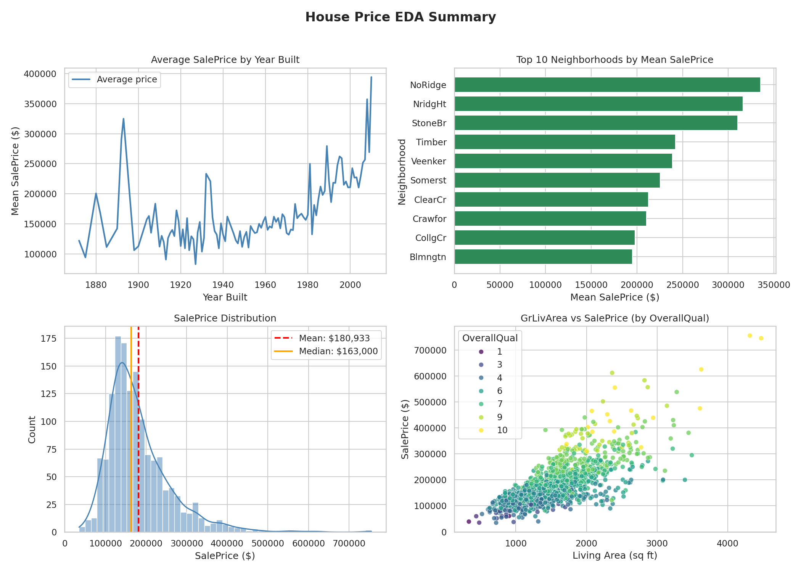

SalePrice Distribution (Right-Skewed)
Step 4Mean exceeds median due to high-value homes; log transformation reduces skewness from 1.881 to 0.121.
Average SalePrice by Overall Quality (1–10)
Step 4Price rises steadily with OverallQual, with larger spread at the top quality levels.
Average SalePrice by Year Built
Step 10Newer construction generally commands higher sale prices, with pre-1940 character peaks.
GrLivArea vs SalePrice (Outliers Highlighted)
Steps 6 & 8Strong positive linear trend (r = 0.709). Uncheck "Remove 2 extreme outliers" in the sidebar to inspect IDs 524 and 1299.
Top 10 Neighborhoods by Mean SalePrice
Step 10NoRidge, NridgHt, and StoneBr consistently lead the market.
Top 10 Features Correlated with SalePrice
Steps 5 & 7Pearson correlation matrix from the dataset. Notice multicollinearity between GarageCars & GarageArea and between TotalBsmtSF & 1stFlrSF.
Neighborhood Pricing & Feature Summary
Click any column header to sort dynamically. Adapts to stacked cards on narrow screens.
Static 2×2 Colab Summary Dashboard (eda_dashboard.png)
Step 10
Generated directly in Google Colab using Matplotlib and Seaborn on the cleaned dataset (1,458 rows).

1. How is SalePrice distributed?
SalePrice is strongly right-skewed (skewness 1.881; mean $180,921 > median $163,000). Applying a log transform reduces skewness to 0.121, making it nearly normal.
2. Strongest numerical correlates?
OverallQual (r = 0.791), GrLivArea (r = 0.709), GarageCars (0.640), GarageArea (0.623), and TotalBsmtSF (0.614). Correlation is scale-free, unlike covariance.
3. Does OverallQual change price steadily?
Yes—median price rises monotonically from quality 1 to 10, and price spread widens significantly in the 8–10 tier.
4. Do neighborhoods differ consistently?
Yes—NoRidge, NridgHt, and StoneBr have medians above $300,000, while older/smaller-lot neighborhoods cluster near $100,000–$130,000.
5. Outliers: errors or unusual sales?
IQR flags more points than Z-score on skewed features (e.g., 61 vs 22 on SalePrice) because extreme values inflate mean and std. Two huge houses (GrLivArea > 4000, IDs 524 & 1299) sold below $200k and distort trend lines.
6. Missing values: truly missing?
19 columns have NA, but most (PoolQC, Alley, Fence, FireplaceQu, GarageType, basement fields) mean feature absent ("None"), not unknown data. LotFrontage was imputed by neighborhood median.